Este manual foi escrito para quem vai triar os participantes e nunca usou o aplicativo. Siga os capítulos na ordem na primeira vez. Depois, use o sumário para voltar ao ponto que precisar. A última página é uma folha de consulta rápida, que vale a pena imprimir.
Algo que vale sempre. Não pule.
Um erro aqui pode causar perda de dados ou uma leitura errada do resultado.
Um detalhe que muda como você deve agir.
Um atalho ou um jeito mais fácil de fazer.
O Triagem Hakunas é uma ferramenta de apoio da equipe de saúde. Ele guarda a ficha de cada participante, soma pontos pelos critérios que você marcar, mostra uma cor de atenção provisória e uma faixa, e ajuda a imprimir e guardar tudo.
| O aplicativo faz | O aplicativo NÃO faz |
|---|---|
|
|
“Cores e pontuação não equivalem a diagnóstico ou autorização para atividade física. A decisão é do profissional responsável.”
Há três jeitos de abrir o aplicativo. Escolha o que combina com o seu aparelho e com a internet do local.
| Jeito | Como fazer | Internet |
|---|---|---|
| Pelo site | No navegador (Chrome, Edge ou Safari), abra https://triagemhakunas.vercel.app. É o único jeito em que funcionam a conta do triador e as Inscrições do formulário. | Precisa de internet para abrir. |
| Arquivo HTML offline | Em , clique em ↓ Baixar HTML offline. Guarde o arquivo e abra-o pelo navegador. No computador, dê duplo clique no arquivo. | Funciona sem internet. Não tem login nem formulário. |
| Atalho no celular | iPhone: abra o site no Safari, toque em Compartilhar e em “Adicionar à Tela de Início”. Android: abra o site no Chrome e use a opção de instalar ou adicionar à tela inicial. | A primeira abertura precisa de internet. |
Se você receber o arquivo HTML pelo WhatsApp ou pelo Drive e tocar nele, o celular pode abrir uma prévia que não executa o aplicativo, e a tela fica branca. Salve o arquivo e abra-o pelo navegador.
O próprio aplicativo recomenda testar no aparelho, com dados inventados, em modo avião, antes de depender dele no dia. Teste também o backup e a restauração (capítulo 9).
O aplicativo não tem banco de dados dos participantes. “As fichas ficam na memória desta aba. Atualizar ou fechar o navegador pode apagar os dados.” Não atualize a página (F5) e não feche a aba sem antes salvar o backup.
Esta é a tela inicial, na aba .
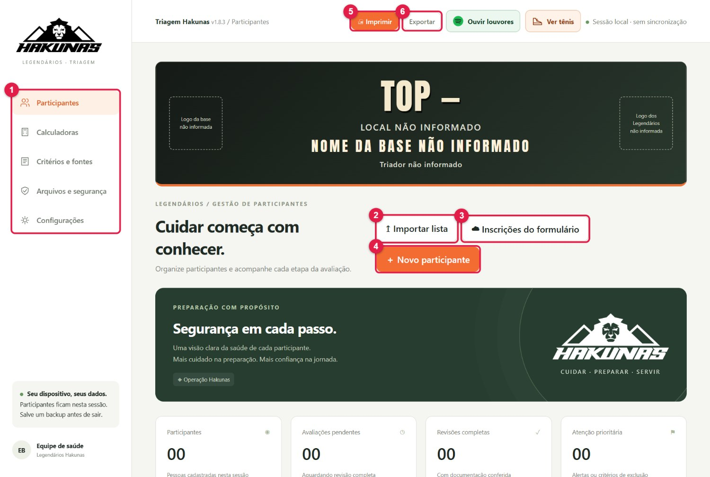
| Área | Para que serve |
|---|---|
| É onde você trabalha: cadastra, importa, abre fichas, procura e acompanha cada pessoa. | |
| IMC e TFGe (função dos rins). Resultados separados da ficha. | |
| Mostra todas as regras de pontos e cores, e de onde elas vêm. Para consulta. | |
| Backup protegido, restauração e apagar a sessão. | |
| Identificação do TOP, conta do triador e preferências de salvar arquivos. |
No alto da tela ficam os botões Imprimir e Exportar, o número da versão do aplicativo (v1.8.3) e o aviso “Sessão local · sem sincronização”. Esse aviso lembra que o que você digita fica só neste aparelho, nesta aba. Os botões Ouvir louvores e Ver tênis abrem links externos em outra aba e não mexem na triagem.
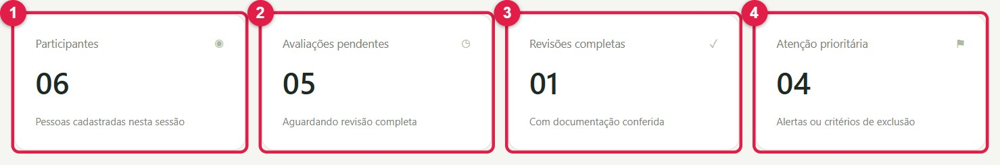
Só os casos Vermelho, Preto e os que têm critério de exclusão. Quem está Amarelo ou Verde não aparece nesse cartão.
Faça isto uma vez, antes de começar a triar. Os dados que você preencher aparecem no cabeçalho das telas, da impressão, dos relatórios e do backup.
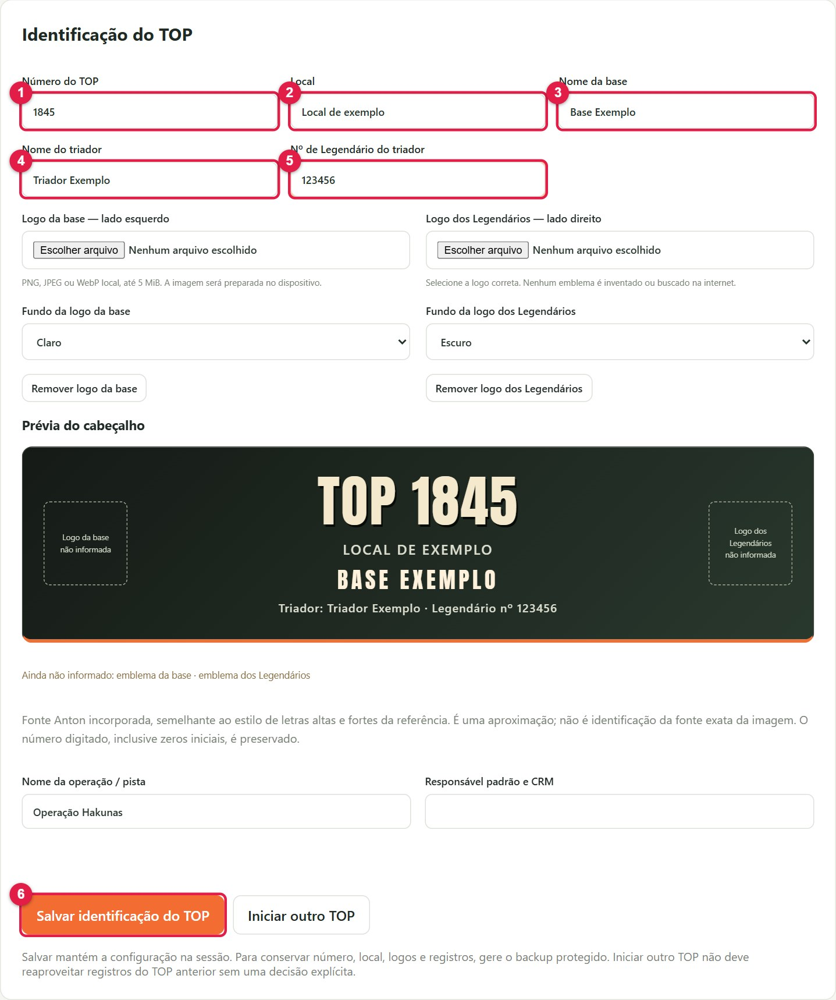
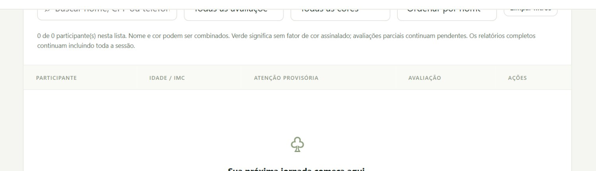
O número do TOP é guardado exatamente como você digitar, inclusive zeros no começo. Os campos “Nome da operação / pista” e “Responsável padrão e CRM”, mais abaixo no mesmo quadro, são opcionais.
O botão Iniciar outro TOP limpa a sessão para um novo evento. Faça o backup antes (capítulo 9). O aplicativo pede confirmação, mantém a base e os logos, e você precisa informar de novo o número e o local.
Sem login, o aplicativo funciona normalmente, inclusive sem internet. Entrar na conta é opcional, mas necessário para usar as Inscrições do formulário e o resumo por WhatsApp. A conta é entregue a você pela coordenação.
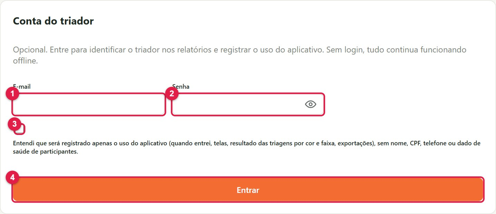
Ainda em , o quadro Salvar arquivos · Google Drive e OneDrive deixa você escolher o formato (.xlsx, .csv, .ods, .pdf ou .html) e o destino que prefere para os relatórios. Depois clique em Guardar preferência de salvamento. Isso não envia nada: só guarda a sua escolha neste navegador.
Há três caminhos. Você pode usar mais de um no mesmo evento.
| Caminho | Quando usar |
|---|---|
| A. Novo participante | Para cadastrar uma pessoa digitando, ou quando o participante chega sem inscrição prévia. |
| B. Importar lista | Quando a coordenação entregou uma planilha ou arquivo com os inscritos. |
| C. Inscrições do formulário | Quando o participante preencheu sozinho o formulário do Google. Exige conta do triador e internet. |
Clique em ＋ Novo participante. Abre a ficha em branco. O preenchimento está no capítulo 6.
O aplicativo lê o arquivo no próprio aparelho. Nada é enviado pela internet. Aceita planilhas (Excel, ODS), CSV/TSV/TXT, HTML, XML, JSON, documentos DOCX/ODT, PDF e imagens comuns.
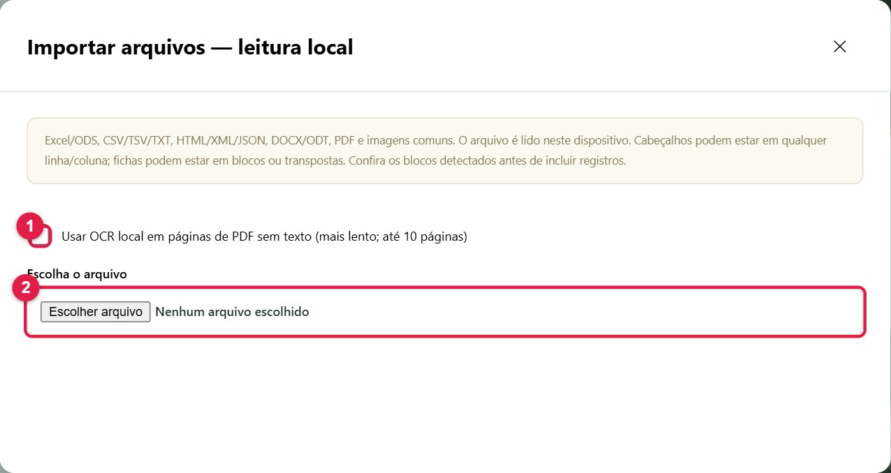
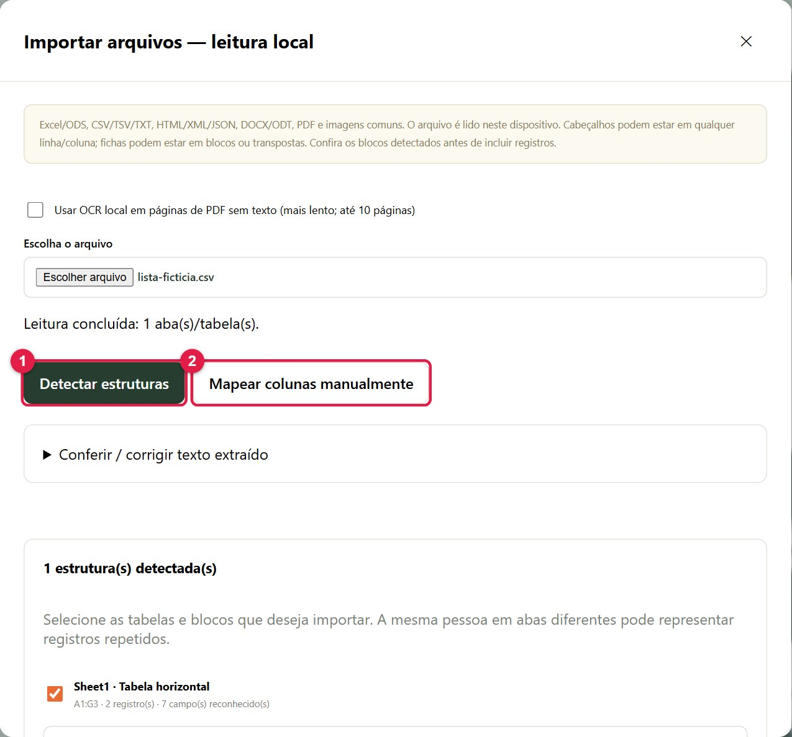
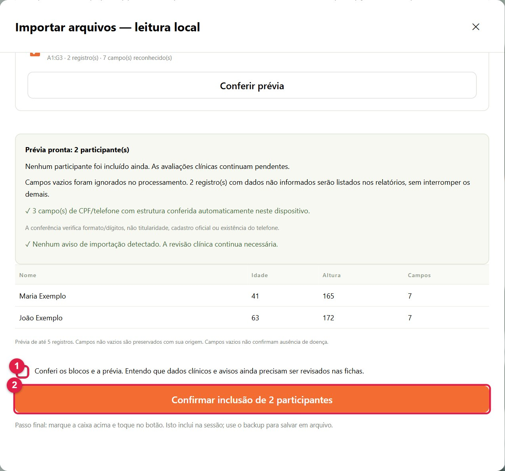
A coordenação pode enviar aos participantes um link de formulário para eles mesmos preencherem a ficha de saúde. Cada resposta chega ao aplicativo e fica esperando você. Os dados são autodeclarados: você deve conferir cada ficha com o participante e com os documentos.
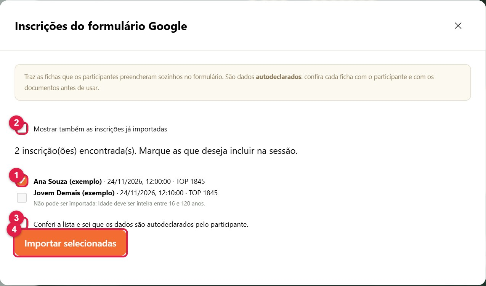
{{LINK_FORMULARIO}}
O formulário só coleta as respostas. Ele não classifica nem libera ninguém. A triagem é feita aqui, na ficha do aplicativo.
É a parte principal do trabalho. Cada participante tem uma ficha. Você preenche, revisa e salva.
A ficha abre numa janela com um botão ✕ para fechar. Embaixo ficam sempre visíveis Imprimir / PDF e Salvar avaliação. O aviso no topo repete: “Dados mantidos somente nesta sessão. Salve um backup protegido antes de fechar ou atualizar.” O ID do participante é gerado pelo aplicativo.
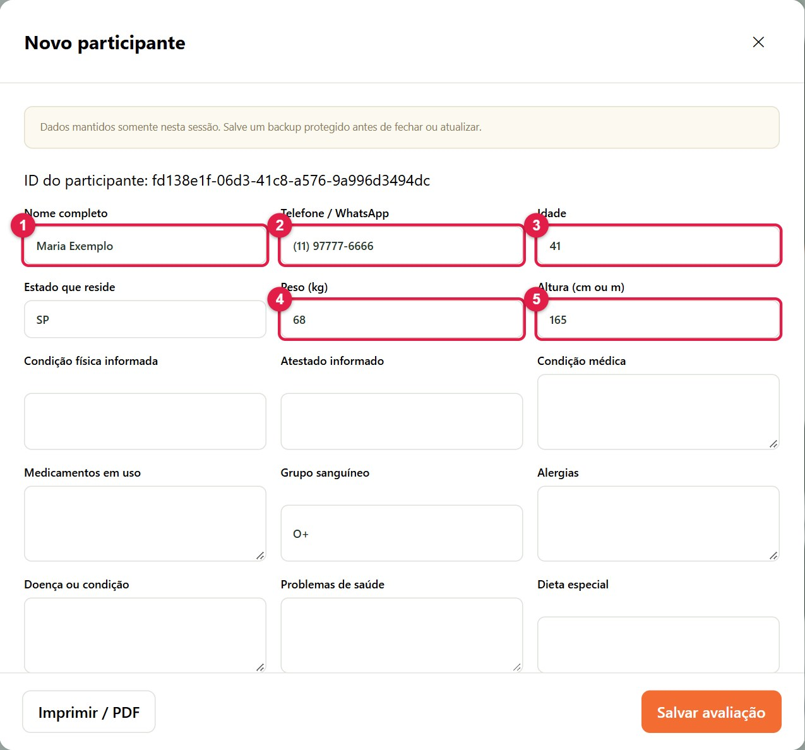
| Campo | Como preencher |
|---|---|
| Nome completo | Como no documento. É permitido salvar sem nome, mas a ficha fica com a pendência “Completar identificação”. |
| Telefone / WhatsApp | Com DDD. Pode ser usado na busca da lista. |
| Idade | Número inteiro, de 16 a 120. Menos de 16 não é aceito. |
| Peso (kg) | De 20 a 350. Exemplo: 82,5. |
| Altura (cm ou m) | Pode digitar 175 ou 1,75. Valores entre 100 e 250 cm. |
| Estado que reside, Grupo sanguíneo, Dieta especial | Texto curto. Exemplo: SP, O+. |
| Condição física informada, Atestado informado | O que o participante ou o documento disse. Texto livre. |
| CPF, E-mail, Contato de emergência | Na digitação manual o aplicativo não confere o CPF nem o telefone. Confira você com o documento. |
| Condição médica, Medicamentos em uso, Alergias, Doença ou condição, Problemas de saúde, Informação médica importante, Observações | Caixas de texto livre para registrar o que for dito. O aplicativo não interpreta esse texto. Veja o aviso abaixo. |
Se o participante disser que usa remédio para pressão e você só escrever isso em “Medicamentos em uso”, os pontos e a cor não mudam. É preciso marcar o critério correspondente na lista de critérios (Passo 2).
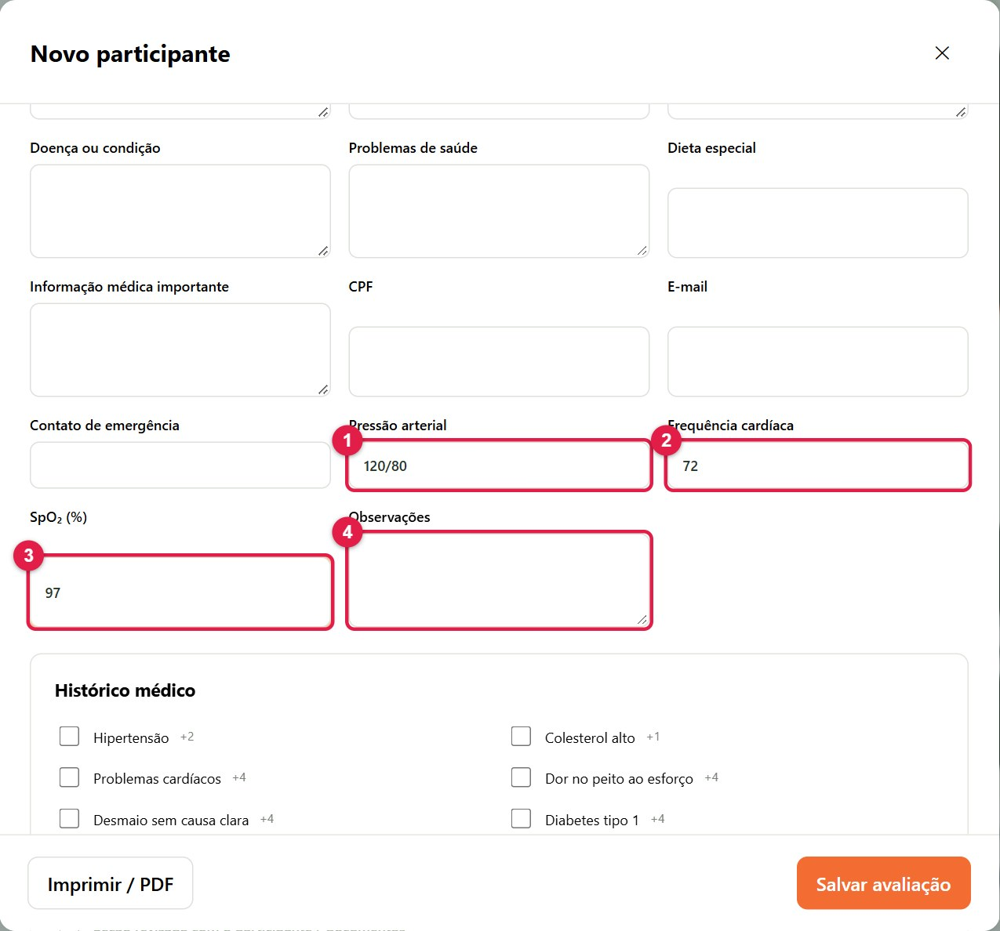
Pressão arterial, frequência cardíaca e SpO₂ ficam registradas na ficha e nos relatórios, mas não entram na soma de pontos nem na cor. Elas servem de registro para o profissional.
Mais abaixo na ficha ficam cinco blocos de critérios: Histórico médico, Medicamentos — fatores do manual, Sintomas atuais, Critérios de exclusão e Fatores adicionais. Cada critério é uma caixinha. Os que somam pontos mostram o valor ao lado (por exemplo, +2).
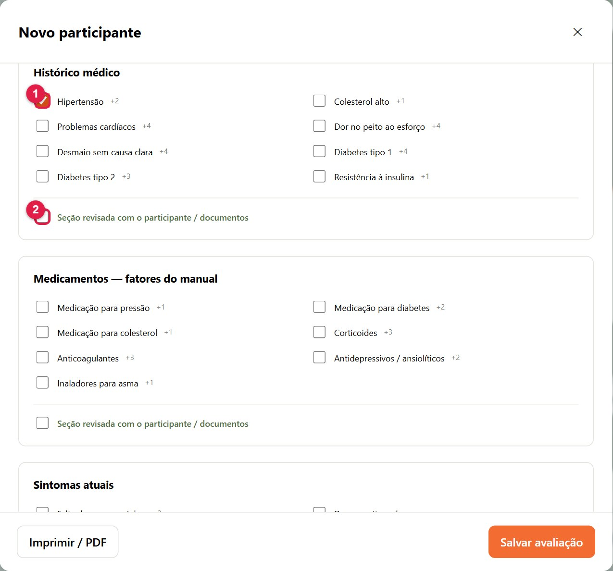
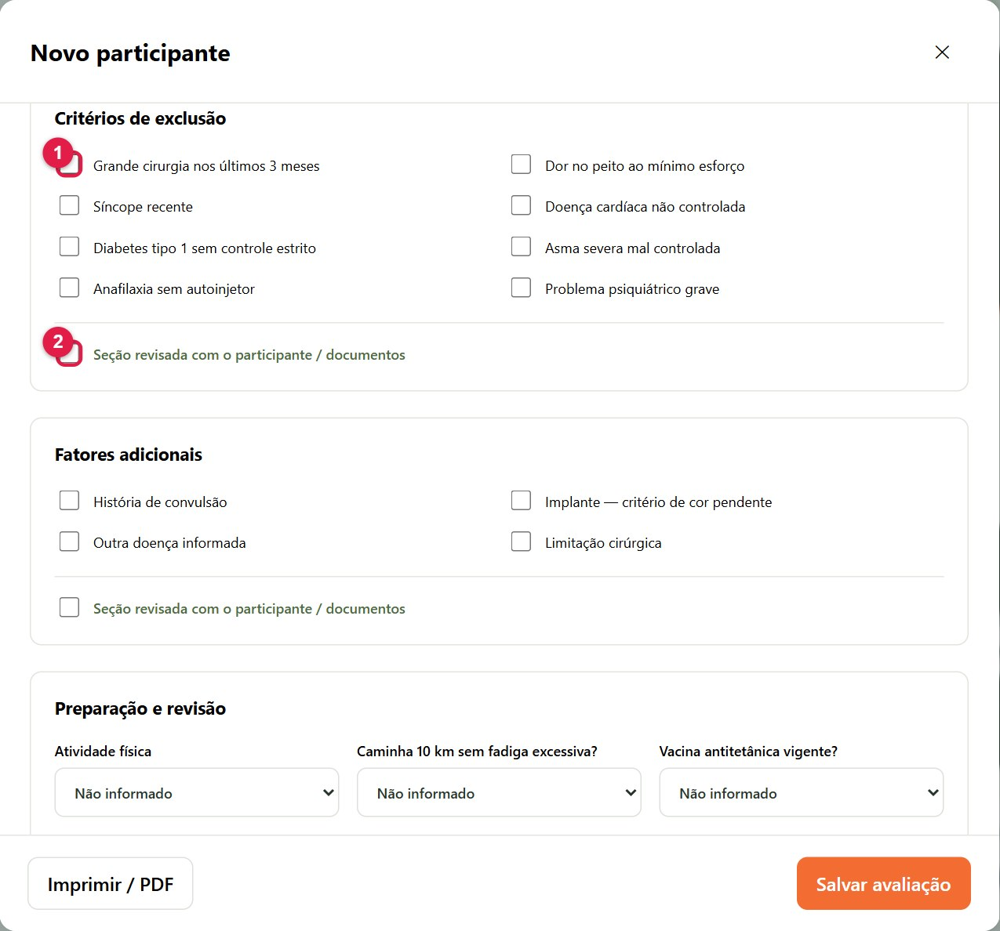
Sem a marca de revisão, o bloco continua como pendência e a avaliação fica “Parcial”. Marcar a revisão sem ter perguntado engana a equipe.
O critério “Implante — critério de cor pendente” ainda não tem uma regra definida pelo responsável. Quando for marcado, a ficha mostra a pendência “Resolver divergência de critério para implante”. O aplicativo não decide a cor. Leve o caso ao médico responsável.
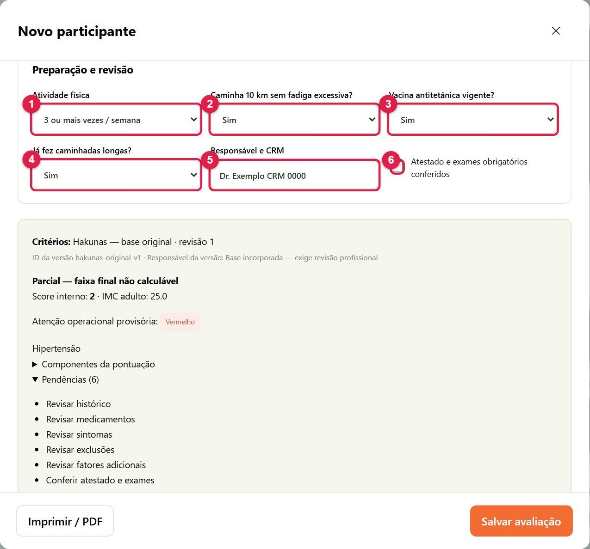
Todos precisam de atestado de médico cardiologista. Menos de 40 anos: eletrocardiograma. 40 anos ou mais: teste ergométrico. O atestado vale 1 ano. Ninguém participa sem o atestado válido no check-in. Em caso de dúvida, vale o manual vigente.
O resultado aparece no fim da ficha e se atualiza sozinho a cada marca que você faz. Veja o que cada linha quer dizer.
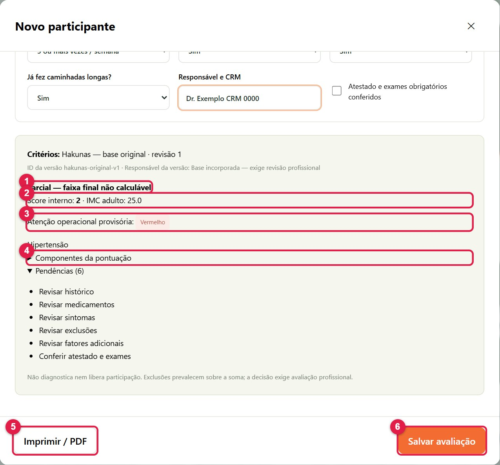
| Linha | O que significa |
|---|---|
| Faixa interna | Baixa, Moderada, Alta ou Muito alta, pelos pontos (capítulo 7). Só aparece quando a avaliação está completa. Enquanto faltar algo, aparece “Parcial — faixa final não calculável”. |
| Score interno | A soma dos pontos dos critérios marcados. |
| IMC adulto | Calculado com peso e altura. Para menores de 18 anos não é calculado. |
| Atenção operacional provisória | A cor: Verde, Amarelo, Vermelho ou Preto. Logo abaixo, o aplicativo lista os motivos da cor. |
| Critérios de exclusão — revisão obrigatória | Texto em vermelho. Aparece quando algum critério de exclusão foi marcado. “Exclusões prevalecem sobre a soma; a decisão exige avaliação profissional.” |
| Pendências | Lista do que ainda falta. Uma ficha só fica completa quando as pendências somem: revisar os cinco blocos, nome, idade, peso, altura, as quatro perguntas de preparo, conferir o atestado e registrar o responsável e o CRM. |
O botão Imprimir / PDF, dentro da ficha, imprime ou salva em PDF o que está aberto agora, inclusive o que ainda não foi salvo.
“Salvar avaliação” guarda na memória da aba. Para guardar em arquivo, faça o backup (capítulo 9).
Quando um número está fora do permitido, a ficha não fecha e aparece uma mensagem em vermelho. Corrija o campo e salve de novo.
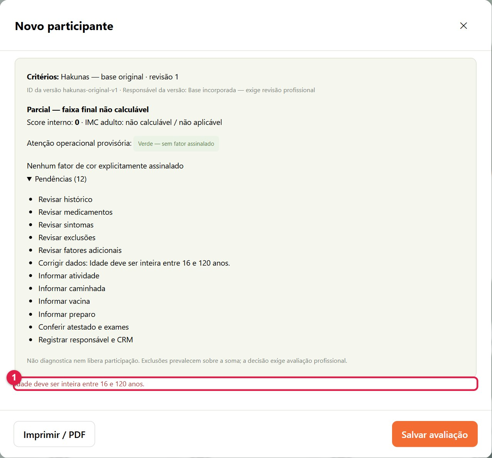
| Mensagem | O que fazer |
|---|---|
| Idade deve ser inteira entre 16 e 120 anos. | Digite só números inteiros. O aplicativo não aceita menores de 16 anos. |
| Peso deve estar entre 20 e 350 kg. | Confira se digitou em quilos. |
| Altura deve estar entre 100 e 250 cm. | Digite 175 ou 1,75. |
O aplicativo usa regras fixas, que estão todas na aba e no Apêndice A deste manual. Você não precisa decorar: o aplicativo mostra o motivo de cada cor.
| Cor | Significa | O que faz a ficha ficar com essa cor |
|---|---|---|
| Verde | Nenhum fator de cor foi marcado. | Nada marcado que dê cor. Não é liberação. |
| Amarelo | Atenção. | Uso de medicamento para pressão, diabetes, colesterol, corticoide, anticoagulante, antidepressivo ou ansiolítico, inalador para asma; IMC acima de 30. |
| Vermelho | Atenção maior. | Hipertensão, problemas cardíacos, diabetes tipo 1 ou 2, “outra doença informada”, limitação cirúrgica, idade acima de 60, idade de 16 ou 17 anos. |
| Preto | Atenção máxima. | História de convulsão; idade acima de 60 junto com outra doença, hipertensão, problema cardíaco ou diabetes. |
Vale a cor mais grave, na ordem Preto › Vermelho › Amarelo › Verde. Exemplo: hipertensão (Vermelho) mais remédio para pressão (Amarelo) resulta em Vermelho.
Veja como cada cor aparece no resultado da ficha. A linha Atenção operacional provisória mostra a cor e, logo abaixo, o aplicativo lista os motivos.
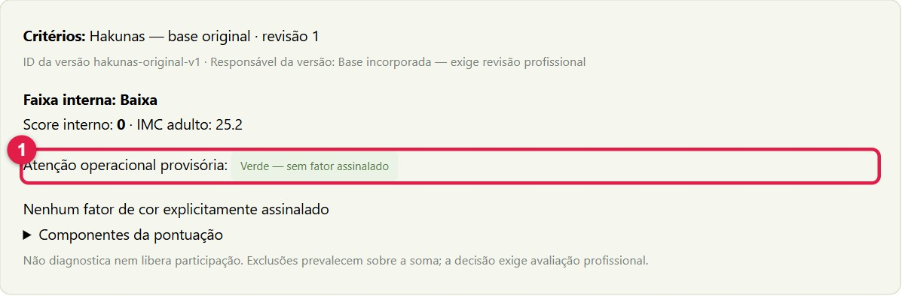
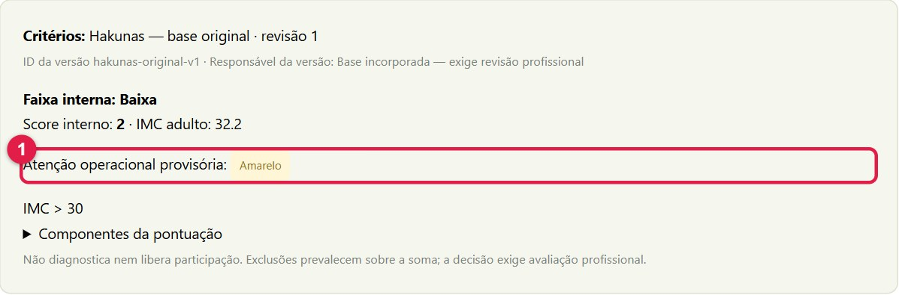
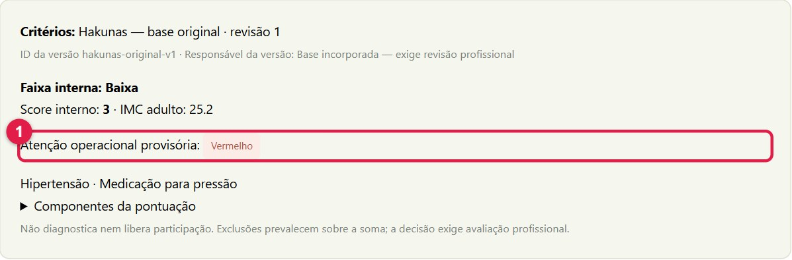
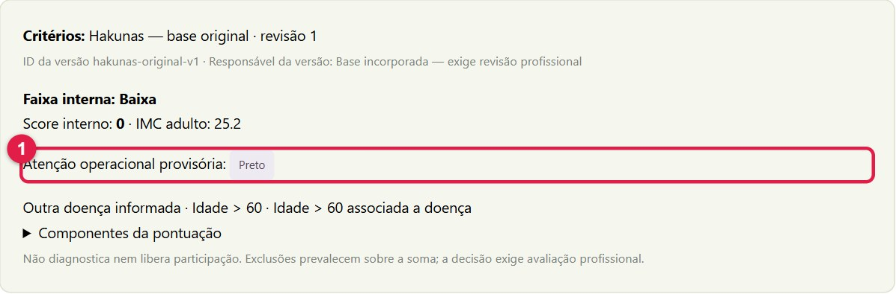
| Faixa interna | Pontos |
|---|---|
| Baixa | 0 a 7 |
| Moderada | 8 a 15 |
| Alta | 16 a 25 |
| Muito alta | 26 ou mais |
A faixa só aparece com a avaliação completa. A pontuação vem das caixinhas marcadas (os valores +1, +2, +3, +4) e das quatro perguntas de preparo.
Uma pessoa pode estar na faixa Baixa e ser Vermelho (exemplo: hipertensão com poucos pontos). Olhe sempre a cor e os motivos, não só a faixa.
Alguns critérios, quando marcados, fazem a ficha exibir, em vermelho, “Critérios de exclusão — revisão obrigatória”. Pela tabela do aplicativo, são:
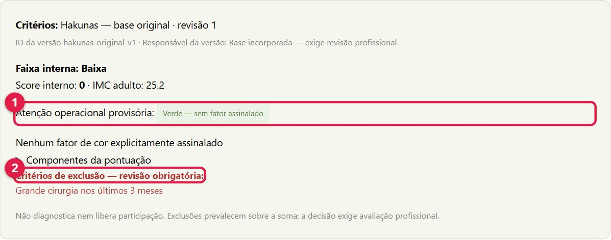
A exclusão não muda a cor. Na ficha acima a cor está Verde e, mesmo assim, o aplicativo exige revisão obrigatória. Na lista de participantes, quem tem critério de exclusão ganha, logo abaixo da cor, um selo vermelho “⚠ Critério de exclusão” com o motivo escrito (por exemplo, “Grande cirurgia nos últimos 3 meses”). O selo é só um aviso: não muda a cor nem a pontuação e não é liberação nem proibição. O sinal também está na ficha e no cartão “Atenção prioritária”. Por isso, abra a ficha antes de qualquer conclusão, e use o filtro “Atenção prioritária” (capítulo 8) para ver todos os casos de exclusão.
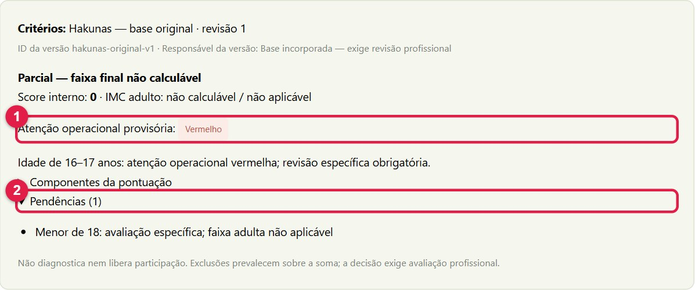
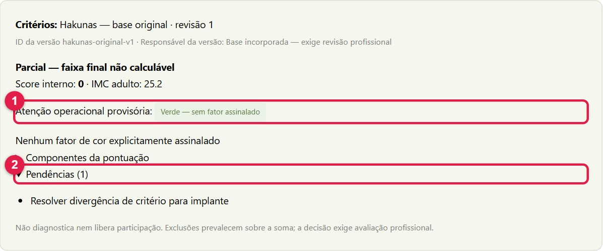
O aplicativo não manda “liberar” nem “barrar” ninguém. Para esses casos: (1) confirme os dados com o participante e com os documentos; (2) leve a ficha ao médico responsável; (3) registre o nome do responsável e o CRM na ficha. A decisão é do profissional.
Na aba , abaixo dos cartões, fica a lista com todos os participantes. Cada linha mostra o nome, o ID, a idade, o IMC, a cor, o estado da avaliação e o botão Abrir ficha.
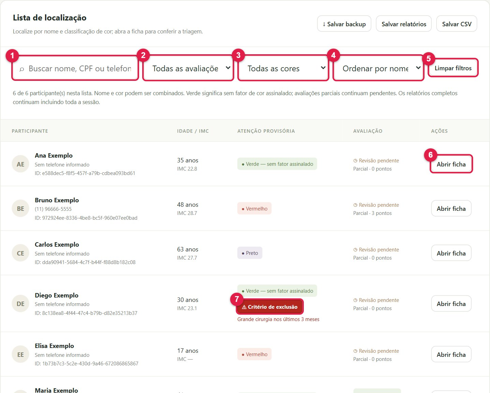
| Controle | Como usar |
|---|---|
| Buscar | Digite parte do nome (com ou sem acento), do CPF, do telefone ou do ID. |
| Todas as avaliações | Escolha entre Pendentes, Revisões completas e Atenção prioritária. |
| Todas as cores | Escolha Verde, Amarelo, Vermelho ou Preto. |
| Ordenar | “por nome (A–Z)” ou “por cor e nome” (Preto primeiro, depois Vermelho, Amarelo e Verde). |
| Limpar filtros | Volta à lista inteira. |
| ← → | Trocam de página, no pé da lista. |
Você pode combinar a busca, a cor e o estado ao mesmo tempo. A frase acima da lista mostra quantos participantes estão sendo exibidos (“2 de 6”).
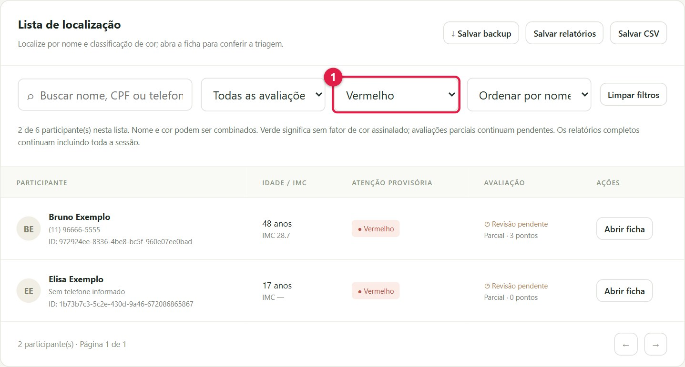
O texto acima da lista lembra: “Verde significa sem fator de cor assinalado; avaliações parciais continuam pendentes.” E uma pessoa com critério de exclusão pode aparecer Verde na lista, mas com o selo vermelho “⚠ Critério de exclusão” abaixo da cor. Veja o capítulo 7.
Os filtros mudam só o que você vê na tela. Os relatórios sempre incluem a sessão inteira.
Na aba há duas ferramentas independentes. Elas não alteram a ficha.
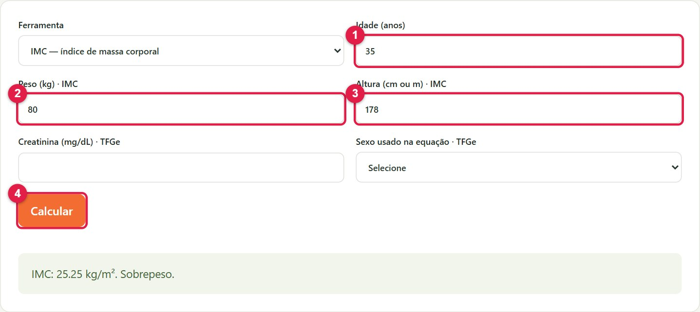
A aba mostra todas as regras em tabelas: o nome de cada critério, os pontos, a cor que ele dá, se ele exclui e se está ativo. Também mostra a fonte das regras (Manual Hakunas) e as faixas. Use-a quando tiver dúvida sobre por que uma ficha ficou de uma cor.
Os botões Editar critérios / adicionar e Aplicar versão ativa às fichas existentes mudam a regra de todas as fichas. Isso só deve ser feito pelo responsável pelo protocolo, com autorização. Se você não tem certeza, não clique.
O backup guarda todas as fichas e configurações em um arquivo protegido por senha, com a extensão .LGND. É a única forma de recuperar a sessão se a página for fechada, atualizada ou o aparelho falhar.
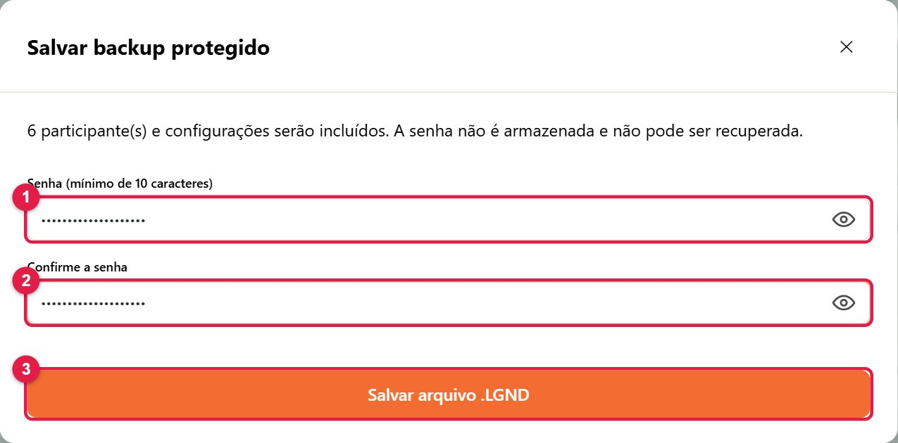
“A senha não é armazenada e não pode ser recuperada.” Se você perder a senha, o backup não abre mais. Anote a senha em lugar seguro e separado do arquivo.
A cada intervalo ou pausa, depois de salvar um lote de fichas, antes de trocar de aparelho e no fim do dia. Use um nome que mostre o TOP e o horário. Esta frequência é uma sugestão deste manual, não uma regra do aplicativo.
O aplicativo só troca a sessão depois de validar o arquivo e de você confirmar. Se houver fichas na tela que ainda não estão em backup, salve um backup novo antes.
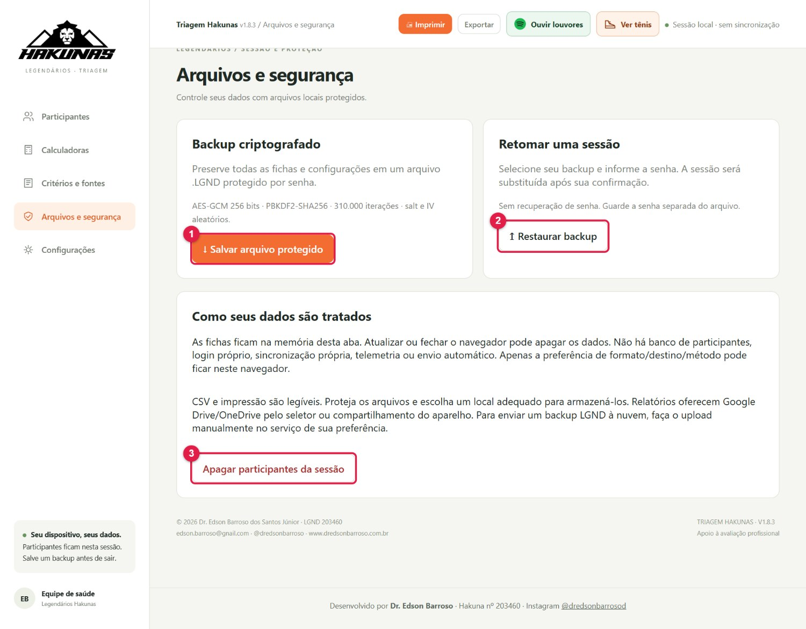
Há duas formas de chegar à mesma janela de relatórios: o botão Imprimir ou Exportar na barra de cima, e o botão Salvar relatórios na lista. O botão Salvar CSV guarda os dados em um arquivo CSV (legível e sem senha).
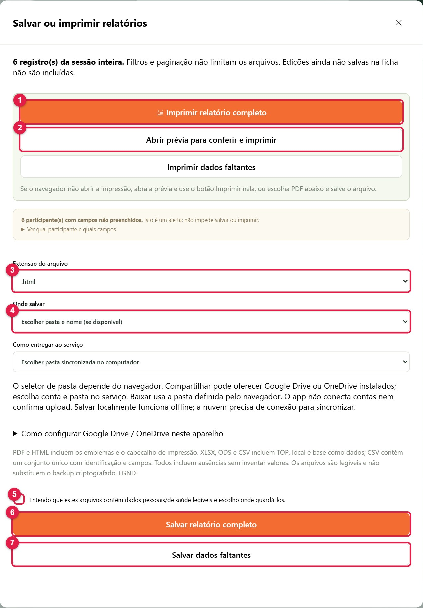
Diferente do backup .LGND, os relatórios não têm senha e contêm dados de saúde. Guarde em local adequado e não envie em grupos.
| ✓ | Antes de fechar o aplicativo |
|---|---|
| ☐ | Todas as fichas foram salvas (nenhuma janela de ficha aberta). |
| ☐ | Casos Vermelho, Preto e com exclusão foram levados ao médico responsável. |
| ☐ | O backup .LGND foi salvo, e a senha anotada em lugar separado. |
| ☐ | O relatório completo foi salvo (e os dados faltantes, se necessário). |
| ☐ | Os arquivos estão em local seguro (pasta definida pela coordenação). |
| ☐ | Só então: se for o caso, Apagar participantes da sessão ou Iniciar outro TOP. |
Esse botão (em ) pergunta: “Apagar todos os participantes desta sessão? Esta ação não pode ser desfeita.” Só confirme com o backup já guardado.
Quando você está com a conta do triador conectada, o aplicativo avisa a coordenação por WhatsApp. Os números que recebem são cadastrados pelo administrador. O que é enviado:
| Quando | O que a coordenação recebe |
|---|---|
| Ao entrar no aplicativo e ao iniciar a triagem (importar) | Aviso de quem está triando. |
| Ao salvar uma ficha Vermelho ou Preto | Alerta individual: nome, idade, motivos, telefone e e-mail. |
| Depois de importar e ao gerar relatório | Resumo: totais por cor e, caso a caso, os Pretos e os Vermelhos, com os mesmos dados. Não repete se nada mudou. |
Todas as mensagens dizem que o caso “requer avaliação humana (não é diagnóstico)”. A cor e os motivos vêm do mesmo cálculo da ficha. Nenhuma inteligência artificial interpreta os dados.
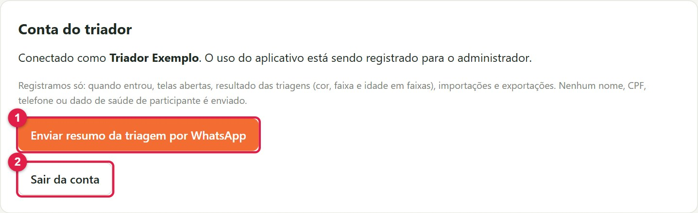
O aplicativo se adapta à tela do celular: o menu passa para a parte de baixo, os botões ficam em coluna e a ficha ocupa quase toda a tela.
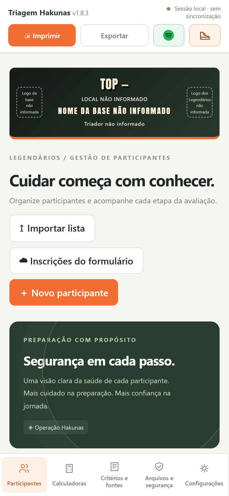
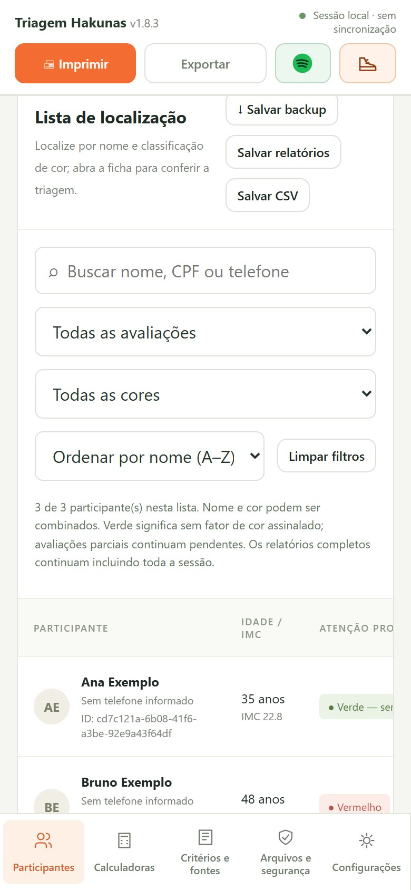
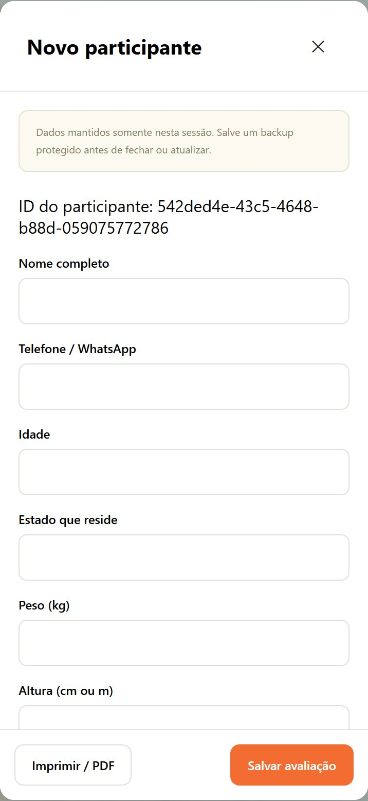
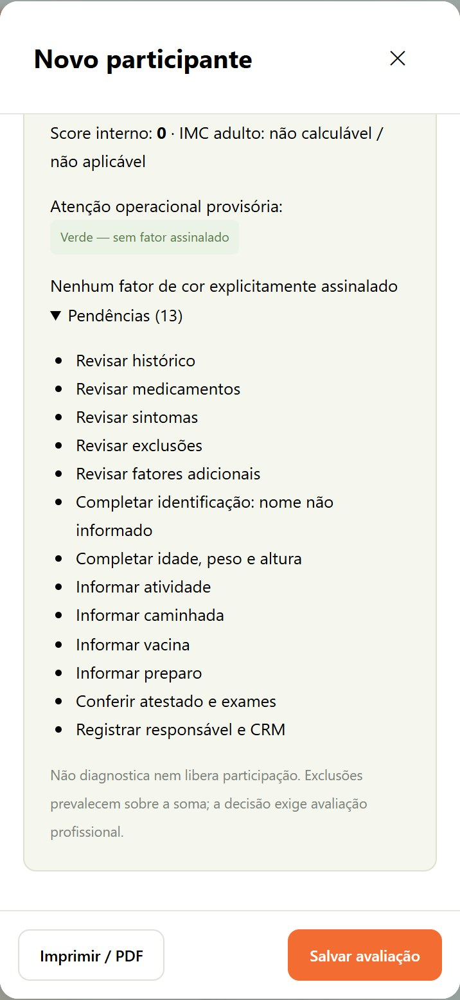
Entrar na conta do triador, as Inscrições do formulário e os avisos por WhatsApp precisam de internet. A triagem em si (fichas, cores, backup, relatórios) funciona sem internet.
| O que aconteceu | O que fazer |
|---|---|
| A tela está branca ao abrir o arquivo. | Você abriu numa prévia. Abra o arquivo pelo navegador, ou use o site. |
| Fechei a aba ou atualizei a página e sumiram os participantes. | Abra o aplicativo, vá em e restaure o último backup .LGND. Sem backup, os dados não podem ser recuperados. |
| Esqueci a senha do backup. | Não há recuperação. Por isso anote a senha em lugar separado do arquivo. |
| O botão Entrar não faz nada. | Marque a caixa de ciência. Confira e-mail e senha, e se há internet. |
| Inscrições do formulário pede para entrar. | Entre na conta do triador em . Funciona só no site, com internet. |
| A importação foi recusada. | Leia a mensagem. Em geral há um dado preenchido inválido, como idade fora de 16 a 120. Corrija o arquivo. O limite é 10 MiB por arquivo. |
| O aplicativo avisa sobre CPF ou telefone. | Ele só confere o formato. Confira com o documento do participante. |
| A ficha não fecha ao salvar. | Há uma mensagem em vermelho. Corrija o campo indicado (idade, peso ou altura). |
| A impressão não abre. | Use “Abrir prévia para conferir e imprimir”, ou salve em PDF e imprima pelo leitor de PDF. |
| A ficha continua “Parcial”. | Abra a ficha e leia a lista de Pendências. Resolva cada item. |
| Marquei um critério, mas a cor não mudou. | Confira se marcou a caixinha correta (e não só escreveu no texto livre). Veja os motivos listados na ficha. |
Se o problema continuar, pare de usar o aparelho para novas fichas, faça o backup se for possível e fale com a coordenação do evento.
| Termo | Significado |
|---|---|
| Ficha | O cadastro e a avaliação de um participante. |
| Sessão | Todos os participantes e configurações que estão abertos agora na aba do navegador. |
| Score interno | Soma de pontos dos critérios marcados. É uma regra operacional interna, não um diagnóstico. |
| Faixa interna | Baixa, Moderada, Alta ou Muito alta, definida pelos pontos. |
| Atenção operacional provisória | A cor da ficha: Verde, Amarelo, Vermelho ou Preto. Provisória, porque depende da revisão e da decisão do profissional. |
| Pendência | Algo que ainda falta na ficha. Enquanto houver pendência, a avaliação fica “Parcial”. |
| Exclusão | Critério que obriga revisão por profissional. Prevalece sobre a soma de pontos. |
| Autodeclarado | Informação que o próprio participante digitou, ainda não conferida pela equipe. |
| Backup .LGND | Arquivo protegido por senha que guarda toda a sessão e permite restaurá-la. |
| ID do participante | Código único que o aplicativo cria para identificar a ficha, mesmo sem nome. |
| TOP | O evento. O número e o local aparecem no cabeçalho. |
| Base | A base de Legendários responsável pelo TOP. |
| IMC | Índice de massa corporal: relação entre peso e altura. |
| SpO₂ | Saturação de oxigênio no sangue, medida em porcentagem. |
| TFGe | Taxa de filtração glomerular estimada, uma estimativa da função dos rins. |
| CRM | Registro profissional do médico. |
| OCR | Leitura de texto em imagens ou PDFs escaneados. No aplicativo, é feita no próprio aparelho. |
Esta tabela reproduz a aba (protocolo “Hakunas — base original, revisão 1”). A Cor é a cor que o critério dá quando marcado. Os pontos entram na faixa interna.
Fonte indicada no aplicativo: Manual Hakunas 1.0 (07/12/2025), cores do relatório consolidado de 10/11/2026 e regra operacional etária do responsável. O aplicativo informa que a base é incorporada e exige revisão profissional: ela não é uma validação clínica externa. Se o responsável editar os critérios, a tabela do aplicativo muda e esta cópia fica desatualizada.
| Faixa | Pontos |
|---|---|
| Baixa | 0–7 |
| Moderada | 8–15 |
| Alta | 16–25 |
| Muito alta | 26 ou mais |
Salvaguardas do aplicativo: 16–17 anos = Vermelho; Preto exige outro critério explícito; menores de 18 não recebem IMC nem faixa adulta; a faixa depende da revisão completa e não libera participação; o implante permanece pendente na base original.
Imprima esta folha e deixe na mesa de triagem.
Verde nenhum fator de cor. Não é liberação.
Amarelo remédios (pressão, diabetes, colesterol, corticoide, anticoagulante, antidepressivo, inalador) ou IMC > 30.
Vermelho hipertensão, coração, diabetes, outra doença, limitação cirúrgica, idade > 60, 16–17 anos.
Preto convulsão, ou idade > 60 com doença.
Vale a cor mais grave. Preto › Vermelho › Amarelo › Verde.
Baixa 0–7 · Moderada 8–15
Alta 16–25 · Muito alta 26+
Só aparece com a avaliação completa. Cor e faixa são coisas diferentes.
Texto vermelho “Critérios de exclusão — revisão obrigatória” na ficha.
A cor pode continuar Verde. Na lista, procure o selo vermelho “⚠ Critério de exclusão” abaixo da cor; abra a ficha e use o filtro “Atenção prioritária”.
As fichas ficam só na aba. Não atualize a página (F5).
Backup .LGND: ↓ Salvar backup, senha com 10+ caracteres, anotada em lugar separado. Sem recuperação de senha.
Marque só o que foi confirmado · texto livre não vira critério · Verde não é liberado · Vermelho, Preto e exclusão vão ao médico responsável · a decisão é do profissional · sigilo dos dados de saúde.